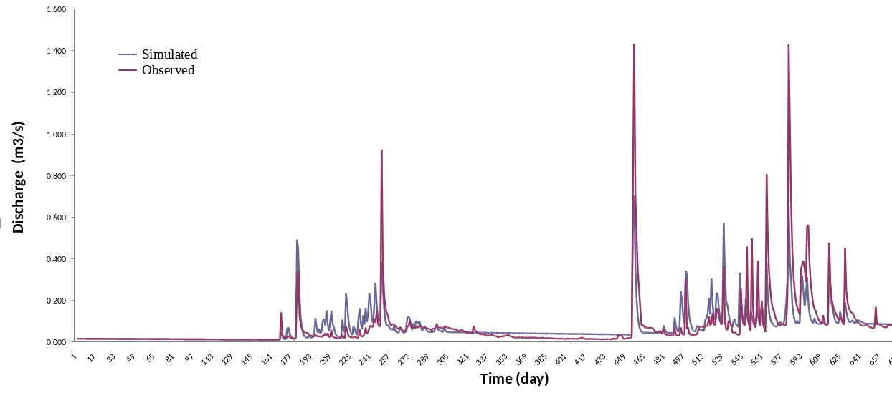

Research experience
 I have participated on different projects (PARAGUAS, PARAMUNDOS, and Landscape Transformation of Bolivian Forest) within the research group: “Hydrology and Ecosystem Modelling (Hidrología y Modelación de Ecosistemas de la Universidad Nacional de Colombia, Sede Medellín), leaded by the full professor: Conrado Tobón since 2018 to the present. Within my activities, I have developed both field and data analysis works, such as: Implementation of hydrological monitoring of catchment like: discharge stations, weather stations, soil moisture stations (TDR), soil properties sampling, cloud and rain stations.
I have participated on different projects (PARAGUAS, PARAMUNDOS, and Landscape Transformation of Bolivian Forest) within the research group: “Hydrology and Ecosystem Modelling (Hidrología y Modelación de Ecosistemas de la Universidad Nacional de Colombia, Sede Medellín), leaded by the full professor: Conrado Tobón since 2018 to the present. Within my activities, I have developed both field and data analysis works, such as: Implementation of hydrological monitoring of catchment like: discharge stations, weather stations, soil moisture stations (TDR), soil properties sampling, cloud and rain stations.
On the other hand, I have experience related to identify different environmental problems and generating possibles answers to solve these problems. I have had experience quantifying hydrologcal processes throughout different altitudinal gradient at Andes Montain such as: glacier, pàramo and cloud forest.
I also have experience simulating land use changes on different catchments in Bolivia, using “Spatial Processes in Hydrology” model (SPHY), which is a spatially distributed hydrological model, that allows to simulate a plethora of processes such as: Snow processes, Glacier mass balance, rainfall-runoff processes, among others. During the develop on the mentioned earlier, I have written scripts to carry out the Generalized Likelihood Uncertainty Estimation (GLUE) methodology to calibrate as well as determining the uncertainty on the generated simulations.

Finally, I have experience related to the Machine Learning implementation to forecast maximum discharge of catchments, using scarce data such as: Multiple Linear Regression, Random Forest, Support Vector Machine, K-Near Neighbor, among others. It has been a recent topic which I am carrying out to develop a possible early warning detection system, based on both lagging measure (i.e. 24 hour previous to the current rainfall event, previous daily discharge, among others) and rainfall events that success at time or could happen in the future.